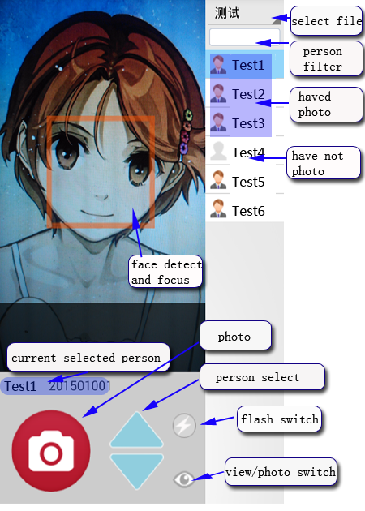

Operation panel description

Software feature
1、Auto set photo file name to your preset.
2、Auto detect face and focus when you photo,or click preview region to focus.
3、If your preset name have repetition,later photo file name will suffix"_1(2,3...)",for ensure no cover before photo.
4、You also can save unshrink and uncompress photo.
Activate software
If you want to use this APP full function(Inactivated version will can only see five person),please register.
1、Download APP,try it and ensure this is you want,then pay $5 USD in paypal(account:lqdxh@hotmail.com).when you pay, please remember write down your phone number.
2、Waiting for we add your phone number to register server,and then we will tell you in E-Mail.
3、Open APP,click Menu to enter setup,and click "Activate software",enter your register phone number to activate.when you reinstall APP,you can register it repeat.
Setup guide
1、Save photo size:The photo size you save, in pixel.
2、The quality of saved photo:The quality of generate photo,usually set to 100,but if you want to generate less file size,you can set less than 100.
3、Create big size photo file:If need, you can checked it,when save photo, it will save unshrink and uncompress photo together, those save in directory which name is selected file's name add "L"
Prepare name list data(see video)
only need two column data
person name:will show in name list.
photo file name:photo will save with this name.
1、You can enter data in Excel with two column,one is person name and one is photo file name.
2、Open notepad and copy data to notepad(don't copy title)
3、Save .txt file and copy to "bmCamera" diretory in phone Internal storage.
4、Open "Batch Photo" and you can chose those file now.
Common question
Some phone uses MTP transport protocol,when they link to computer in USB cable,sometime can't see APP create file(windows MTP transport protocol bug), in this time,you can use phone assistant software to help you.
Feedback and suggest
If you have good idea or find bug in running,please tell us,thank you��you can use this way:
1、uses "Feedback and suggest" function in APP.
2、visit our sina micro-blog
click to enter.
3、E-Mail:
lqdxh@hotmail.com.